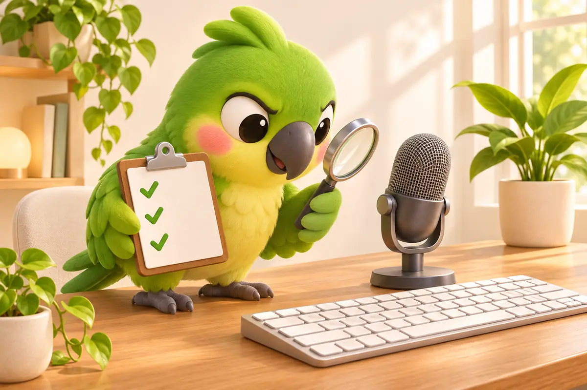

Scan with your iPhone cameraParroting for iPhone · US$4.99 once
Scan with your iPhone cameraParroting for iPhone · US$4.99 once
I'm Sona Orbit, the solo developer behind Parroting. Parroting is a free Mac voice typing app I built, so section 6 mentions it. The steps and limits for built-in Dictation follow Apple's official documentation (Dictate messages and documents on Mac, If Dictation doesn’t work as expected on Mac, macOS feature availability). I checked them on November 16, 2026. Menu locations can differ slightly between macOS versions, so go by what you see on your screen. Parroting features and menu names are as of version 0.4.20.
1. The short answer: three steps to turn it on
- Flip the switch. Apple menu → “System Settings” → “Keyboard” in the sidebar → find “Dictation”, turn it on, then click “Enable”.
- Pick a shortcut and a language. The same section has “Shortcut” and “Languages”. Click “Edit” next to Languages and check the languages you will speak.
- Try it in any text field. Put the cursor in a Notes or Messages field and press the shortcut. When the cursor highlights and blinks, or you hear a tone, start talking. Press Esc when you are done.
If you only dictate a sentence or two now and then, that is enough. The sections below cover each step in detail and what to check when something goes wrong.
2. Turn on built-in Dictation in macOS
Here are the full steps from Apple's instructions.
- Click the Apple menu in the top-left corner of the screen and choose “System Settings”.
- Click “Keyboard” in the left sidebar. The list is long, so you may need to scroll down.
- On the right, find “Dictation” and turn it on. When the confirmation window appears, click “Enable”.
- macOS may ask whether you want to share audio recordings to improve Siri and Dictation. Click “Share Audio Recordings” to share, or “Not Now” to skip. Dictation works either way.
If you change your mind later, go to “System Settings → Privacy & Security → Analytics & Improvements”. The switch is called “Improve Siri & Dictation”.
macOS 12 or earlier has no System Settings. The same switch is in System Preferences > Keyboard > Dictation.
One thing can keep Dictation from working. Apple's documentation says that while “Voice Control” is on, standard Dictation is unavailable and Voice Control handles dictation instead. Voice Control is the Accessibility feature that lets you operate the whole Mac by voice.

3. Start and stop: setting the shortcut
Once Dictation is on, there are three ways to start talking.
- The microphone key. If the top row of your keyboard has a key with a microphone icon, press it once and let go to start dictating. Press it once. Holding it down brings up Siri.
- The Dictation shortcut. In the Dictation section of Keyboard settings, open the “Shortcut” menu and pick one. If none suits you, choose “Customize” and press the keys you want. Apple's example is Option + Z.
- The menu. In most apps, choose Edit > Start Dictation in the menu bar.
When the cursor highlights and blinks, or you hear a tone, you can start talking. There are three ways to stop: press Esc, press the microphone key again, or press the Dictation shortcut again. If you press nothing, Dictation stops by itself after 30 seconds of silence.
On a Mac with Apple silicon, you can type on the keyboard during dictation without stopping first. When you stop typing, you can keep talking.
Words with a blue underline in the results are ones the system is unsure about. Click a word to pick another candidate, or just retype it.
4. What to say: languages, punctuation, new lines
Add your languages
In the Dictation section of Keyboard settings, click “Edit” next to “Languages” and check the languages and regions you want. You can check several at once, for example English and Mandarin (Taiwan). While you dictate, the current language shows next to the cursor. Click it to switch. If your keyboard has a Globe key, you can press it to choose too.
Dictation recognizes speech in the language you have selected. To change languages, you switch yourself.
Punctuation
In Apple's feature list, “Auto-punctuation” covers English (US, UK and others) and Mandarin (Taiwan), among other languages. It adds commas, periods and question marks for you. If you don't want that, turn off “Auto-punctuation” in the same settings area.
Say other symbols out loud, for example “exclamation mark”. Emoji work too, for example “heart emoji”.
New lines and paragraphs
| You say | Result |
|---|---|
| “new line” | Same as pressing Return once |
| “new paragraph” | Same as pressing Return twice |
The new line or paragraph appears when you finish speaking and end dictation. Apple lists every command in Dictation commands.
Does your voice get uploaded?
Apple's feature list shows separately which languages support on-device dictation. Support depends on the language you dictate in. When I checked, the list included English (US, UK and others), Mandarin (China mainland) and Cantonese (Hong Kong), but not Mandarin (Taiwan). Apple notes that on-device dictation needs a speech model download. So if you dictate in Mandarin (Taiwan), assume you need an internet connection. The surest check is your own Mac. After you turn on Dictation, there is a line of text under “Dictation” in Keyboard settings. It says whether your speech is processed on the device or sent to a server.

5. Won't turn on? Check this list
If the shortcut does nothing, or you talk and no text appears, work down this list. It follows Apple's troubleshooting guidance.
| Problem | Check first |
|---|---|
| The shortcut does nothing | Is “Dictation” on in Keyboard settings? Are you pressing the shortcut you chose there? Is “Voice Control” on? |
| The microphone key opens Siri | You held it too long. Press once and let go to dictate |
| It reacts but no text appears | Is “Microphone source” set to the microphone you are using? Desktop Macs have no built-in microphone. Plug in an external one and choose it in “Sound” or Keyboard settings |
| Text comes out in fragments | Go to “System Settings → Sound → Input” and check the input volume. Make sure nothing covers the microphone. In a noisy room, use a headset microphone |
| The text is completely wrong | Is the Dictation language set to a different language? The current language shows next to the cursor |
| It suddenly stopped working | Did the internet connection drop? Check “System Settings → Network” |
| It stops partway through | It stops automatically after 30 seconds of silence. Press the shortcut again to continue |

6. Offline or long sessions: add a voice typing app
Built-in Dictation needs no install and suits a few sentences now and then. In these cases, consider adding a separate voice typing app:
- You want voice typing without an internet connection, or you don't want your audio to leave the Mac.
- You mix two languages in one sentence and don't want to keep switching.
- Coworkers' names and product names keep getting misheard, and you want a place to save the correct spelling.
- You want a hold-to-talk, release-to-paste rhythm.
There are many apps like this, paid and free. I compared them in 7 Mac voice typing apps compared. Here I use Parroting, the app I built, as the example of how to set up this kind of tool. Compared with built-in Dictation, you add two steps: permissions and a model download.
- Install. Open the downloaded dmg, drag Parroting into the Applications folder, then open it from Applications.
- Grant two permissions. On first launch, it takes you to System Settings to allow “Microphone” and “Accessibility”. Microphone is for capturing your voice. Accessibility lets it paste text into the app you are using and receive the shortcut keys.
- Download a speech model. Pick a model and download it. You only download once. After that, recognition runs on this Mac, and dictation works without internet.
- Test it. The setup screen asks you to hold the shortcut and say a short test phrase. One try confirms the hotkey, microphone, recognition and paste all work.
The default shortcut is Right ⌥ + Right ⌘ (Right Option + Right Command). Hold it to talk, and the text is pasted at the cursor when you let go. A light tap keeps listening until you tap again to finish. Esc cancels. If an external keyboard has no right-side ⌥ or ⌘, change the combination in “Settings → Talk → Shortcuts”.
Here is how the two compare.
| Built-in macOS Dictation | Parroting | |
|---|---|---|
| Install | None, built into the system | Download a dmg, then download a speech model |
| Cost | Free | Free |
| Supported Macs | Both Intel and Apple silicon | Apple silicon only, macOS 11 or later |
| Mandarin (Taiwan) | Not on the on-device dictation language list | Recognized locally on your Mac, works offline |
| Punctuation | Adds commas, periods and question marks automatically. Say the rest | Adds punctuation locally, including full-width Chinese punctuation and spaces between Chinese and English text |
| Misheard names and terms | Fix by hand | Add them to your personal dictionary |
| New lines | Say “new line” or “new paragraph” | A “New line after each paste” switch adds a line break at the end of each paste |
To choose a model, read How to choose a local speech model for Mac. If names and terms keep coming out wrong, see Three layers of accuracy fixes, from dictionary to custom speech model. For daily use once it is on, such as cleaning up spoken text and translating, see How to use Chinese voice typing on Mac.
7. FAQ
Where is the voice typing switch on a Mac?
Go to Apple menu → “System Settings” → “Keyboard” in the sidebar → “Dictation”. Turn it on, then click “Enable”. On macOS 12 or earlier, go to System Preferences > Keyboard > Dictation.
My keyboard has no microphone key. How do I start dictation?
In the Dictation section of Keyboard settings, pick a combination from the “Shortcut” menu, or choose “Customize” and press the keys you want. You can also choose Edit > Start Dictation in an app's menu bar.
Can Mac built-in Dictation work offline?
It depends on the language. In Apple's feature list, on-device dictation includes English (US, UK and others), Mandarin (China mainland) and Cantonese (Hong Kong). When I checked in November 2026, it did not include Mandarin (Taiwan). For your own Mac, read the text under “Dictation” in Keyboard settings.
Why does Dictation stop partway through?
Apple's documentation says it stops automatically when it detects no speech for 30 seconds. Press the shortcut or the microphone key again to continue.
Why won't the Dictation switch turn on or do anything?
First check whether “Voice Control” is on. While Voice Control is on, standard Dictation is unavailable. Other common causes are pressing the wrong shortcut, the wrong “Microphone source”, or a lost internet connection.